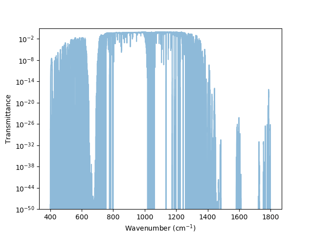
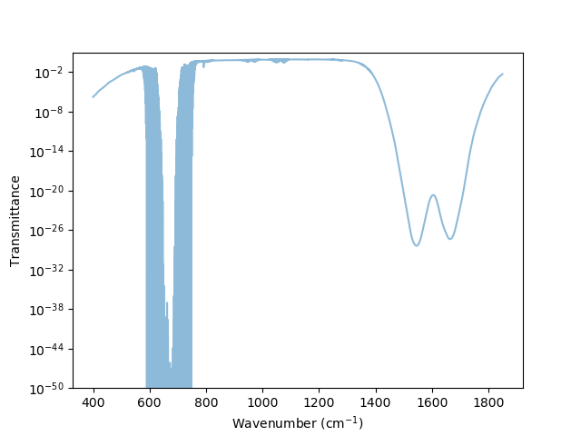
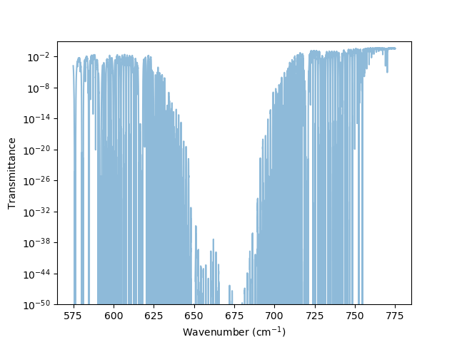
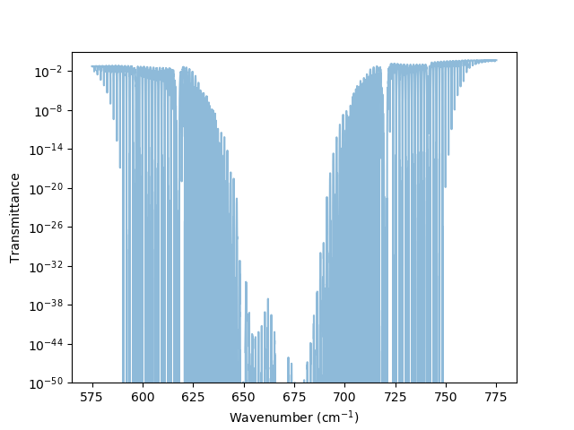
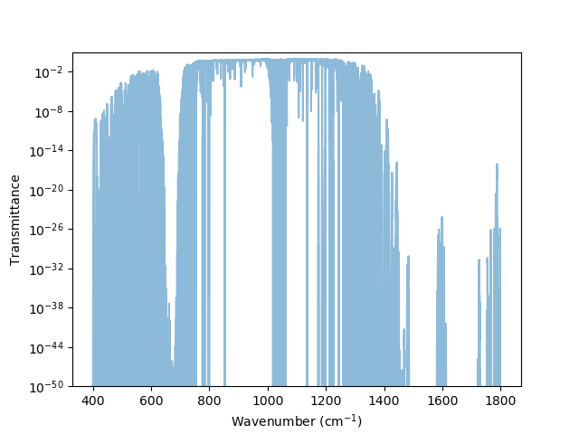
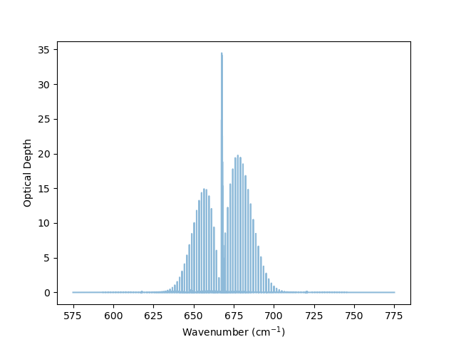
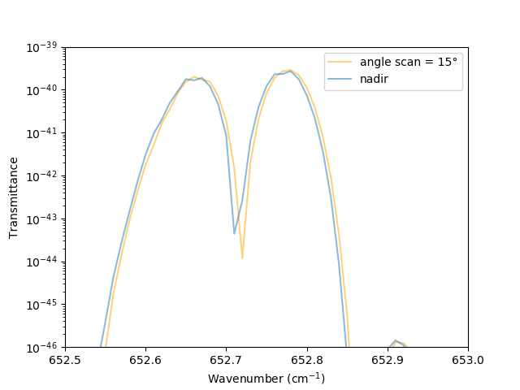

C3S2
Table of Contents
1 LBLRTM
1.1 Présentation des TAPES
1.1.1 TAPE3
La TAPE3 est un fichier binaire qui est généré par lnfl.
1.1.2 TAPE 5
La TAPE5 controle les paramètres de LBLRTM et le profil de l'atmosphère. Elle est composée de différents Record, on s'intéresse ici seulement à certains.
- Sortie en ascii
Pour génerer des fichiers de sorties en ascii, selon le tableau suivant:
TAPE Grandeur 27 Transmittance 28 Température de Brillance 29 Radiance Il faut ajouter le record 12 suivant au TAPE5
0.01 575.0000 775.00000 1 0 12 1 1 11 2 0.01 575.0000 775.00000 0 0 12 1 1 13 2 -1.0 $ Transfer to ASCII plotting data HI=0 F4=0 CN=0 AE=0 EM=0 SC=0 FI=0 PL=1 TS=0 AM=0 MG=0 LA=0 MS=0 XS=0 0 0 # Plot title not used 575.0000 775.00000 1.02000 1.000000 5 0 11 0 1.000 0 0 0 0.0000 1.2000 7.0200 0.2000 4 0 1 1 0 0 0 3 29 575.0000 775.00000 10.2000 1.000000 5 0 11 0 1.000 0 0 0 0.0000 1.2000 7.0200 0.2000 4 0 1 1 1 0 0 3 28 575.0000 775.00000 1.02000 1.000000 5 0 13 0 1.000 0 0 0 0.0000 1.2000 7.0200 0.2000 4 0 1 0 0 0 0 3 27 -1. %%%%%
1.1.3 TAPE6
Fichier de sortie de LBLRTM contenant plein d'informations
1.1.4 TAPE7
Fichier de composition moléculaire le long de la colonne atmosphérique.
1.1.5 TAPE10
La TAPE10 est un fichier binaire qui contient les informations de profondeur optique. Il peut être lu par un code idl
read_lbl_data.pro
1.1.6 TAPE11, TAPE12, et TAPE13
Les TAPE 11, 12, et 13 sont les fichiers de sorties binaires de LBLRTM. On peut les convertir en ASCII en ajoutant quelques lignes au TAPE5 ( Section 1.1.2.1)
1.2 V12.13

Figure 1: Transmittance of the profil 83 for all gaz

Figure 2: Transmittance of the profil 83 for Co2 only

Figure 3: Transmittance of the profil 83 for all gaz, zoom on the PMR window

Figure 4: Transmittance of the profil 83 for Co2 only, zoom on the PMR window
1.3 V12.2

Figure 5: Transmittance of the profil 83 for all gaz, zoom on the PMR window
1.4 Profondeur optique
1.4.1 code idl
- compiler le code:
IDL> .r read_lbl_data.pro
- executer le code sur le TAPE10
IDL> read_lbl_file,'/CEMS_data/sondage/julesv/runs_lblrtm/run10/ODdeflt_100',data1,data2,data3,/double
Attention, voir dans le code pour ce que représente data1,data2,data3
- Écrire les valeurs des nombres d'ondes dans un fichier texte test.dat:
IDL> write_matrix,'test.dat',data2
1.4.2 TAPE10
Le code idl , permet de lire la TAPE10 :

Figure 6: Optical depth of profil 83 for all gaz, zoom on PMR window
1.5 Couche par couche
- ODdeflt
- ODint
- ODexact
Comment lire ces fichiers binaires ?
2 Effet Doppler
2.1 Principe
2.1.1 Doppler simple
2.1.2 Doppler avec un angle

2.1.3 Le satellite se rapproche
Figure 9: \(\alpha\): angle de visée, \(\theta\): angle entre \(\vec{v}\) et rayonnement
2.1.4 Le satellite s'éloigne
Figure 10: \(\alpha\): angle de visée, \(\theta\): angle entre \(\vec{v}\) et rayonnement
2.1.5 Dans les deux cas
2.2 Dans LBLRTM
2.2.1 Modification de oprop.90
- Changement ligne 700
! DOPPLER SHIFTS WILL BE CALCULATED FOR SATELLITE HEIGHT OF 1100 KM ! VELOCITY 26282.9 KM/H FOR A CIRCULAR ORBIT DATA velPMR/26282.9/ ! SCAN ANGLE FOR THIS RUN -ITS SINE, DEFINING A PARTICULAR PMR CHANNEL DATA scansine/0.05/ ! PI IMPLICTLY R*8 DATA VPI/3.14159265359/ ! C IMPLICITY R*8 (M/S) DATA vc/299792458.0/ ! VC IN KM/H vvc=vc*3600./1000. ! ! - Changement ligne 750
VNU(I) = vlin(I) ! DOPPLER BLUE SHIFT - VIEW AGNLE BETWEEN NADIR AND FORWARD ORBITAL MOTION VNU(I) = VNU(I) * (1. + velPMR*scansine/vvc) !
2.2.2 Décalage des raies de transmitance

Figure 11: Décalage des raies d'absorption par effet Doppler
3 PMR
3.1 Description de l'instrument
3.1.1 Caractéristiques technique
Le PMR comprends 2 cellules :
- Une cellule de 1 cm de long de pression variant entre 0.5 et 3 mb (60 à 90 km).
- Une cellule de 6 cm de long de pression 1 à 4 mb (40 à 60 km).
La pression dans les cellules oscille sinusoïdalement.
3.1.2 Approximation de P. Rayer
- Pmean dans les cellules
- Secante dans les celllules
3.2 Dans LBLRTM
3.2.1 Profil à 1 couche
- Pression fixée soit minimale soit maximale
- Résolution à 0.0001 cm-1
Ou est la TAPE5 de P. Rayer ?
3.2.2 Profils atmosphériques
- Résolution à 0.0001cm-1
- Concentration en CO2 diminuée pour correspondre aux valeurs des années 1970